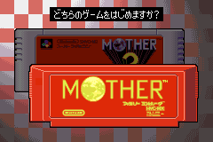

Mother 1+2 (Japan)
SRAM 256K Save Format Spec gbakit Built-In
Cartridge Identity
- Game Code
A2UJ(FamilyA2U)- Header Title
MOTHER12- Maker / Revision
01/ rev0- ROM Size
- 16.0 MiB (16,777,216 B)
- Save Media
SRAM 256K- SHA-256
fd444702f465698e8608e3034b68a65d59b538febb5aec371370435e9fea6e7a
Screenshots


Battery Save Format Specification
Open Full Save Format SpecDownload Sample .sav (32,768 B)Download save-format.json
- Specification Coverage
- 9 mapped fields · 2 verified checksum(s) · Confidence: MEDIUM
- gbakit Built-In Support
- Built-in (A2UJ)
- Emulator Verification
- Checksum enforced: No · Repaired save accepted: Yes
gbakit save verify A2UJ save.sav
gbakit save decode A2UJ save.sav
gbakit save fix A2UJ damaged.sav -o repaired.savObserved Battery Save Layout
- Fill Byte & Active Size
0xFFfill · 0–32 / 32,768 B active (entropy 3.03 bits/B)- Active Offset Ranges
0x7F00–0x7F1F(1 total)- ASCII Magic / Headers
MOTSEL127- Observed Variable Regions
- 32 bytes across 1 spans:
0x7F00–0x7F1F - Candidate Checksum/Counter Spans
- None
Hardware MMIO Subsystems
ppu_display0x800e5e4,0x8013878,0x8f0d59c